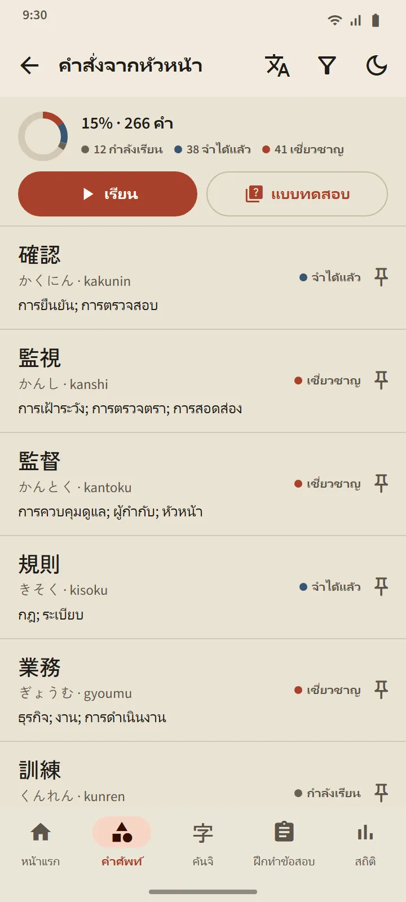

คำศัพท์
คำศัพท์ที่จำได้จริง
ทุกการ์ดจัดตารางด้วย FSRS อัลกอริทึมทบทวนแบบเว้นระยะรุ่นใหม่ คุณประเมินตัวเอง แล้วแอปจะคำนวณว่าคำนั้นควรกลับมาเมื่อไร: ระยะเวลาถัดไปแสดงอยู่บนทุกปุ่ม คำศัพท์จะไต่ขึ้นจาก “ใหม่” ผ่าน “กำลังเรียน” และ “จำได้แล้ว” ไปสู่ “เชี่ยวชาญ” ซึ่งขั้นสุดท้ายนี้ไปถึงได้ผ่านแบบทดสอบเท่านั้น
- 95 หัวข้อใน 11 กลุ่ม กลุ่มสถานที่ทำงานมี 21 หัวข้อ: การดูแลผู้สูงอายุ ก่อสร้าง เกษตรกรรม ประมง โรงงาน ธุรกิจโรงแรม ร้านอาหาร ความปลอดภัยในการทำงาน คำสั่งจากหัวหน้า สัญญาและค่าจ้าง
- หนึ่งหน้าจอต่อหนึ่งชุดคำศัพท์ ร้อยละความคืบหน้า สถานะของทุกคำ ปุ่ม “เรียน” และ “แบบทดสอบ”
- พจนานุกรมพกพา 38,085 คำ ค้นด้วยคันจิ คานะ โรมาจิ หรือความหมาย
